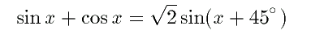
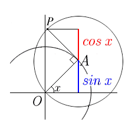

|
The figure shows the idea of constructing
the function; y = sin x + cos x. Point A is on the unit circle, and point P is on the circle whose radius is 1 and whose center point is A. The angle OAP is always 90 degrees. When the figure OAP rotates arround the origin, the y-coordinate of point P is sin x + cos x. The goal of the applet is to understand the following equality.  To draw the graph, press "Draw" button. |
 |